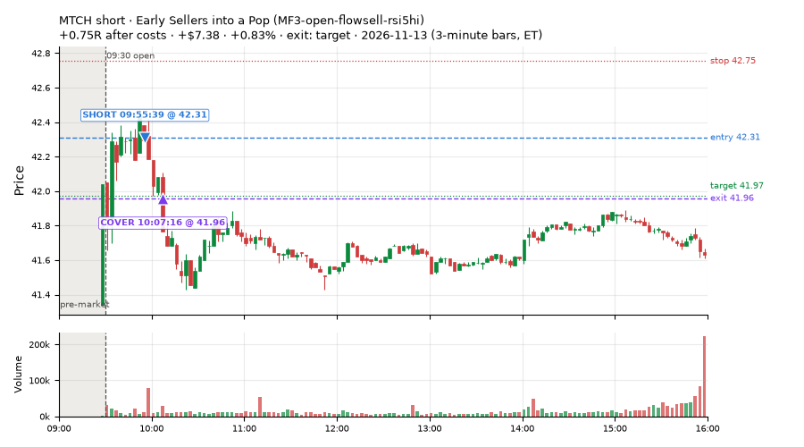
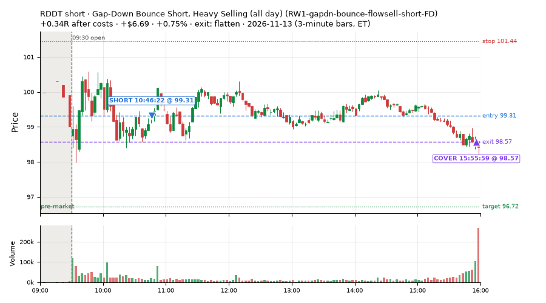
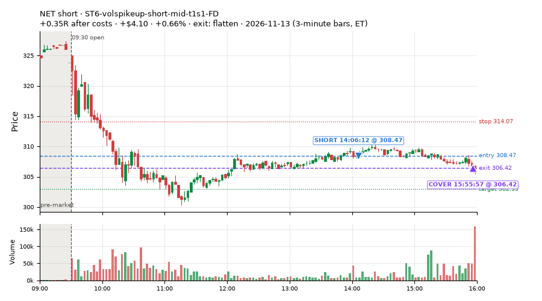
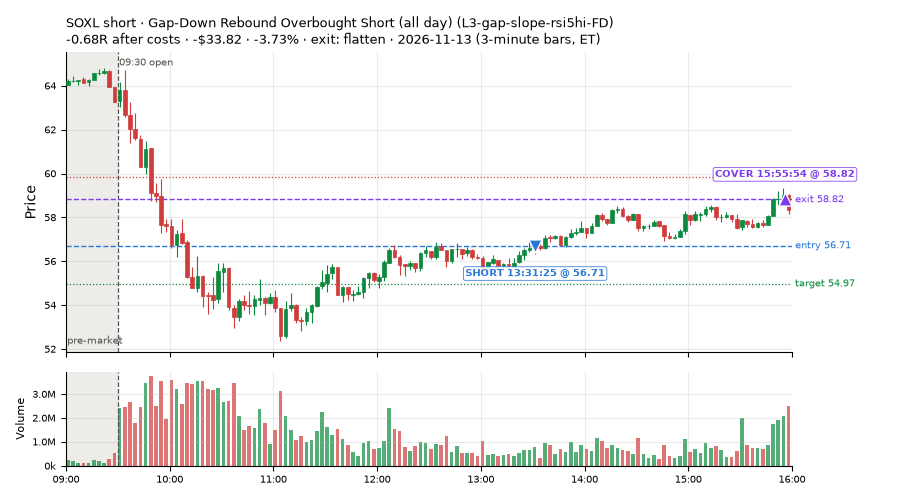
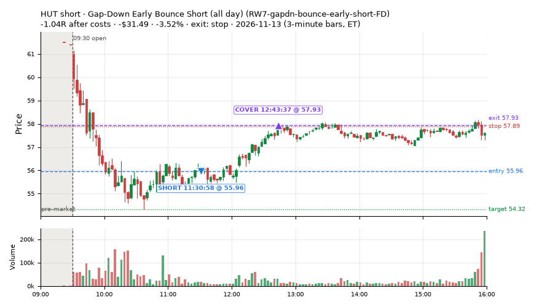
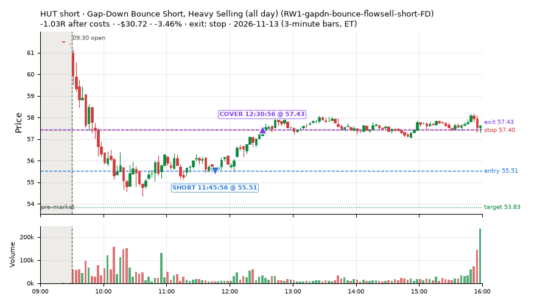
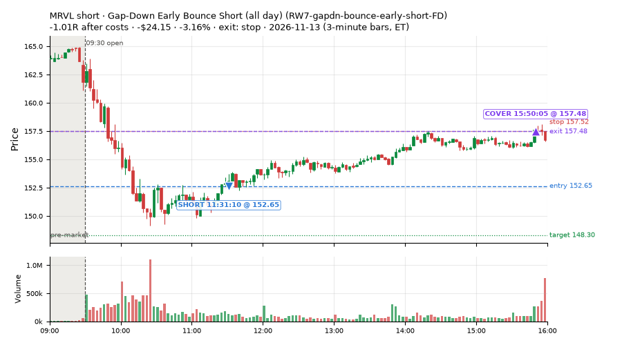
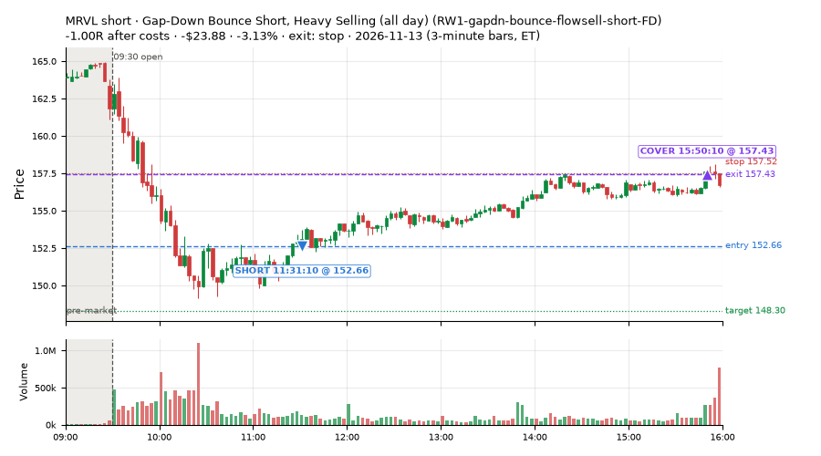

77 trades · win rate 26% · P/L $-590.12
PROBATION: no live setup has passed both locked test periods. 10 owner-directed setups added 2026-10-08 (MarcoFlow top 5 + 5 new), untested live. RW6G1 (RW6 + VWAP band guard) added 2026-10-09, probation.

| Symbol | Setup | Side | In | Out | Entry | Exit | Exit reason | % gained | P/L |
|---|---|---|---|---|---|---|---|---|---|
| MTCH | Early Sellers into a Pop (MF3-open-flowsell-rsi5hi) | short | 09:55 | 10:07 | 42.31 | 41.96 | target | +0.83% | $7.38 |
| RDDT | Gap-Down Bounce Short, Heavy Selling (all day) (RW1-gapdn-bounce-flowsell-short-FD) | short | 10:46 | 15:55 | 99.31 | 98.57 | flatten | +0.75% | $6.69 |
| NET | ST6-volspikeup-short-mid-t1s1-FD | short | 14:06 | 15:55 | 308.47 | 306.42 | flatten | +0.66% | $4.10 |
| Symbol | Setup | Side | In | Out | Entry | Exit | Exit reason | % lost | P/L |
|---|---|---|---|---|---|---|---|---|---|
| SOXL | L3-gap-slope-rsi5hi-FD | short | 13:31 | 15:55 | 56.71 | 58.82 | flatten | -3.73% | $-33.82 |
| HUT | RW7-gapdn-bounce-early-short-FD | short | 11:30 | 12:43 | 55.96 | 57.93 | stop | -3.52% | $-31.49 |
| HUT | RW1-gapdn-bounce-flowsell-short-FD | short | 11:45 | 12:30 | 55.51 | 57.43 | stop | -3.46% | $-30.72 |
| MRVL | RW7-gapdn-bounce-early-short-FD | short | 11:31 | 15:50 | 152.65 | 157.48 | stop | -3.16% | $-24.15 |
| MRVL | RW1-gapdn-bounce-flowsell-short-FD | short | 11:31 | 15:50 | 152.66 | 157.43 | stop | -3.13% | $-23.88 |








Signal to fill: median 2s, 90th percentile 4s (77 trades). Bars close each minute; the order follows the bar close.
Best excursion (MFE): median 0.18R; worst (MAE) median 0.65R. 65% of trades never got +0.25R in our favour; 0 reached +1R and still closed at or below 0.
| Symbol | Setup | Best R | Worst R | Closed R |
|---|---|---|---|---|
| SWKS | RW7-gapdn-bounce-early-short-FD | +0.35 | -1.02 | -1.10 |
| KLAC | RW7-gapdn-bounce-early-short-FD | +0.37 | -1.04 | -1.01 |
| APH | MF2-open-rsimidhi-flowsell-FD | +0.23 | -1.05 | -1.13 |
| HUT | RW7-gapdn-bounce-early-short-FD | +0.27 | -1.02 | -1.04 |
| WULF | RW7-gapdn-bounce-early-short-FD | +0.19 | -1.03 | -1.10 |
| Entry time | Trades | Win | Avg R | P/L |
|---|---|---|---|---|
| 09:50-10:30 | 3 | 33% | -0.14 | $-9.63 |
| 10:30-11:30 | 13 | 69% | +0.06 | $-18.90 |
| 11:30-13:00 | 38 | 11% | -0.64 | $-439.16 |
| 13:00-14:00 | 8 | 12% | -0.63 | $-86.54 |
| 14:00-16:00 | 15 | 33% | -0.10 | $-35.89 |
| Setup | Trades | Win | Avg R after costs | Adj R (net of SPY) | Avg R ex-market (all sessions) | P/L |
|---|---|---|---|---|---|---|
| Panic Flush Reversal (5x volume) (CWT05-flush-m05-v5-long) | 2.0 | 100% | +0.69 | +0.16 | – | $8.56 |
| Gap-Down VWAP Loss Short (10% gap) (CWT09-gapdn-vwaploss-g10-short) | 1.0 | 100% | +0.05 | +0.13 | – | $4.50 |
| Gap-Down Rebound Overbought Short (all day) (L3-gap-slope-rsi5hi-FD) | 2.0 | 0% | -0.51 | -0.49 | -0.03 (beta -2.11, n 71) | $-49.72 |
| Early Sellers, Mid-High RSI (all day) (MF2-open-rsimidhi-flowsell-FD) | 3.0 | 0% | -1.13 | -0.88 | +0.05 (beta -3.22, n 28) | $-37.09 |
| Early Sellers into a Pop (MF3-open-flowsell-rsi5hi) owner-directed; holdouts once: Sep-Oct -0.059R n170, Apr-Jun -0.034R n729 | 3.0 | 100% | +0.58 | +0.88 | -0.01 (beta -0.89, n 34) | $14.10 |
| Early Sellers, Strong Heat (all day) (MF4-h40-open-flowsell-FD) | 1.0 | 0% | -0.62 | -0.47 | +0.01 (beta -1.90, n 44) | $-22.46 |
| Big Gainer Dip-and-Pop (NS1-rsidip-rsi5pop-long) owner-directed; holdouts once: Sep-Oct +0.326R n10, Apr-Jun +0.056R n119 | 1.0 | 100% | +0.37 | +0.58 | – | $5.39 |
| Gap-Down Bounce Short, Heavy Selling (all day) (RW1-gapdn-bounce-flowsell-short-FD) | 9.0 | 11% | -0.52 | -0.32 | -0.21 (beta -1.02, n 60) | $-104.83 |
| Gap-Down Early Bounce Short (all day) (RW7-gapdn-bounce-early-short-FD) | 35.0 | 17% | -0.58 | -0.30 | -0.10 (beta -1.19, n 567) | $-344.24 |
| ST6-volspikeup-short-mid-t1s1-FD | 20.0 | 30% | -0.19 | -0.11 | +0.09 (beta -1.35, n 28) | $-64.33 |
Market direction (SPY, beta 1) accounted for $-206.96 of today's $-590.12; the rest ($-383.16) came from the setups themselves. Avg R net of SPY: -0.21 (incl. a hedge leg's cost; report only).
14 setups live today. Today: 177 signals, 77 taken, 2 lost because another setup held the symbol (1%). Since 2026-10-09 (26 sessions): 10280 signals, 4097 taken, 765 lost to other setups (7%). Peak open positions today 56 of 400 slots. Earnings blackout removed 546 symbols before scanning.
Simulated playing time (not live): 5845 what-if trades of signals not taken, avg -0.14R, 48% winners; of them 612 lost to another setup (avg +0.01R).
Silent: IDX1-qqq100-0955-TQQQ-trail, IDX1-qqq100-0955-TQQQ-hold, IDX2-spy075-0945-3x-trail, IDX3-spy075-0955-3x-trail, IDX5-spy050-0945-3x-trail · Crowded out: MF3-open-flowsell-rsi5hi, RW4-ns3-adv150-short-FD, RW4-ns3-adv150-short, NS3-failed-vwap-reclaim-short-FD · Starved: orb20_a, MF1-945-flowsell-vwapup, RW6G1-ns2-up3-vwap2sd-short, LIQ-pdl-sweep-open15-vwap-long, MF5-flowsell-vwapup-rsi5hi, ST5-pdbrkup-short-mid-t05s1-FD, ST3-rsi5up-short-pm-t1s1-FD, exhaustion_short-FD, NS2-sma50break-overbought-short, MF1-945-flowsell-vwapup-FD
| Prio | Setup | Today sig / taken | Sessions | Signals / taken / trades | Taken/day | Expected/day | Lost to other setups | Lost to (setup n) | Top skip reasons | SIMULATED: not-taken n / avg R / win | Verdict |
|---|---|---|---|---|---|---|---|---|---|---|---|
| 1 | ST6-volspikeup-short-mid-t1s1-FD ST6-volspikeup-short-mid-t1s1-FD | 21 / 20 | 20 | 55 / 28 / 28 | 1.40 | 1.24 | 4 | RW4-ns3-adv150-short-FD 3, NS3-failed-vwap-reclaim-short 3, NS3-failed-vwap-reclaim-short-FD 1 | split-tape short gate 13, not shortable / shorts off 6, symbol held by another setup 4 | 25 / -0.12R / 48% | slow 7.0 entries/week; ~9 weeks to 60 trades |
| 2 | Gap-Down Bounce Rejection Short (10% gap) CWT09-gapdn-bounce-g10-lowerhalf-short | 2 / 0 | 2 | 55 / 2 / 2 | 1.00 | – | 0 | – | not shortable / shorts off 50, other 2, spread / quote / size 1 | 52 / -0.94R / 8% | slow 5.0 entries/week; ~12 weeks to 60 trades |
| 3 | Panic Flush Reversal (5x volume) CWT05-flush-m05-v5-long | 3 / 2 | 2 | 7 / 4 / 4 | 2.00 | – | 1 | CWT09-gapdn-vwaploss-g10-short 1 | symbol held by another setup 1, spread / quote / size 1, other 1 | 3 / +0.55R / 100% | slow 10.0 entries/week; ~6 weeks to 60 trades |
| 4 | Gap-Down VWAP Loss Short (10% gap) CWT09-gapdn-vwaploss-g10-short | 3 / 1 | 2 | 42 / 2 / 2 | 1.00 | – | 0 | – | not shortable / shorts off 39, spread / quote / size 1 | 40 / -1.39R / 18% | slow 5.0 entries/week; ~12 weeks to 60 trades |
| 5 | Early Sellers into a Pop MF3-open-flowsell-rsi5hi | 5 / 3 | 20 | 143 / 34 / 34 | 1.70 | 9.19 | 38 | MF3-open-flowsell-rsi5hi-FD 35, MF5-flowsell-vwapup-rsi5hi 13, MF5-flowsell-vwapup-rsi5hi-FD 7 | symbol held by another setup 38, split-tape short gate 38, spread / quote / size 17 | 109 / -0.39R / 35% | crowded-out 38 of 143 signals (27%) lost to setups already holding the symbol |
| 6 | Afternoon Higher-Low Long (near-miss) NM-HL-T75-pm-long | 0 / 0 | 2 | 1 / 0 / 0 | 0.00 | – | 0 | – | spread / quote / size 1 | 1 / +0.45R / 100% | slow no entries yet |
| 7 | Big Gainer Dip-and-Pop NS1-rsidip-rsi5pop-long | 1 / 1 | 3 | 6 / 4 / 4 | 1.33 | 0.92 | 0 | – | spread / quote / size 2 | 2 / +0.39R / 100% | slow 6.7 entries/week; ~9 weeks to 60 trades |
| 8 | L3-gap-slope-lowdist-FD L3-gap-slope-lowdist-FD | 1 / 0 | 25 | 459 / 105 / 105 | 4.20 | 9.76 | 9 | RW6-ns2-up3-short-FD 3, NS2-sma50break-overbought-short-FD 3, L3-gap-slope-rsi5hi-FD 3 | not shortable / shorts off 169, daily loss cap 72, split-tape short gate 50 | 345 / -0.01R / 54% | ok 21.0 entries/week |
| 9 | Gap-Down Rebound Overbought Short (all day) L3-gap-slope-rsi5hi-FD | 37 / 2 | 10 | 544 / 71 / 71 | 7.10 | 13.41 | 10 | L3-gap-slope-fromopen-FD 8, L3-gap-slope-lowdist-FD 4, RW6G1-ns2-up3-vwap2sd-short-FD 2 | not shortable / shorts off 254, daily loss cap 119, spread / quote / size 46 | 451 / -0.06R / 64% | ok 35.5 entries/week |
| 10 | 20-Minute Opening Range Breakout orb20_a | 5 / 0 | 25 | 98 / 33 / 33 | 1.32 | 6.79 | 0 | – | trigger missed between polls 31, spread / quote / size 12, other 8 | 59 / +0.08R / 52% | starved 1.32 entries/day vs ~6.79 expected |
| 11 | Early Sellers, Mid-High RSI (all day) MF2-open-rsimidhi-flowsell-FD | 16 / 3 | 10 | 73 / 28 / 28 | 2.80 | 10.09 | 9 | RW7-gapdn-bounce-early-short-FD 4, RW1-gapdn-bounce-flowsell-short-FD 4, RW3-gapdn-rsi5pop-flowsell-short-FD 2 | spread / quote / size 17, symbol held by another setup 9, not shortable / shorts off 9 | 44 / -0.09R / 36% | slow 14.0 entries/week; ~4 weeks to 60 trades |
| 12 | Gap-Down Early Bounce Short (all day) RW7-gapdn-bounce-early-short-FD | 52 / 35 | 25 | 1190 / 567 / 567 | 22.68 | 59.92 | 38 | LIQ-orl-sweep-open15-s25-long 11, RW1-gapdn-bounce-flowsell-short-FD 9, MF2-open-rsimidhi-flowsell-FD 7 | split-tape short gate 195, daily loss cap 110, spread / quote / size 105 | 620 / +0.04R / 53% | ok 113.4 entries/week |
| 13 | Gap-Down Bounce Short, Heavy Selling (all day) RW1-gapdn-bounce-flowsell-short-FD | 17 / 9 | 9 | 94 / 60 / 60 | 6.67 | 17.10 | 10 | RW3-gapdn-rsi5pop-flowsell-short-FD 5, MF2-open-rsimidhi-flowsell-FD 3, RW5-heat30-flowsell-rsi5pop-gapdn-short-FD 3 | spread / quote / size 12, symbol held by another setup 10, other 7 | 32 / +0.18R / 62% | ok 33.3 entries/week |
| 14 | Early Sellers, Strong Heat (all day) MF4-h40-open-flowsell-FD | 14 / 1 | 10 | 129 / 44 / 44 | 4.40 | 16.45 | 26 | MF5-flowsell-vwapup-rsi5hi-FD 9, MF1-945-flowsell-vwapup-FD 6, RW3-gapdn-rsi5pop-flowsell-short-FD 6 | symbol held by another setup 26, spread / quote / size 21, not shortable / shorts off 17 | 82 / -0.32R / 43% | ok 22.0 entries/week |
Every trade is attached as a CSV you can open and edit in Excel or Google Sheets. Live page: https://misiti15.github.io/MCF/live/